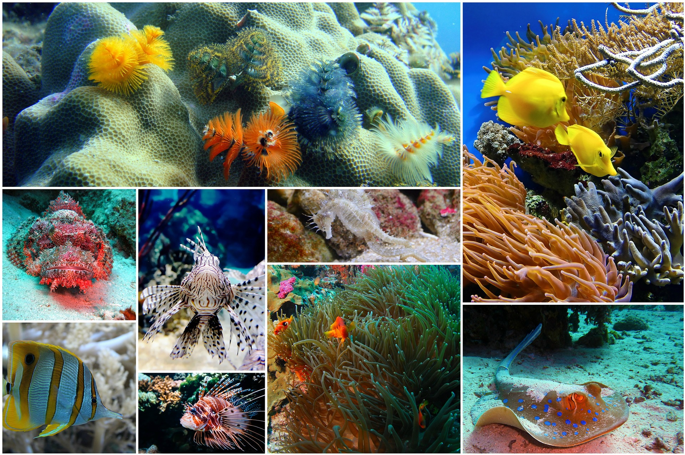

Нырять всегда, нырять везде...
... именно под таким девизом пройдет слёт любителей дайвига в городе Хургада (Египет) с 27.12.22 по 3.01.23. Вас ждут интересные выступления, мастер классы и конечно встреча Нового года на дне Красного моря.
... именно под таким девизом пройдет слёт любителей дайвига в городе Хургада (Египет) с 27.12.22 по 3.01.23. Вас ждут интересные выступления, мастер классы и конечно встреча Нового года на дне Красного моря.
Гостеприимно распахнул свои объятия новый дайв-центр "Черная каракатица". Любителей дайвинга ждёт профессиональный стафф, абсолютно новое оборудование, уютная лаундж-терраса. В январе погружение в Блю-Холл за половину стоимости дайва.
Прекрасная новость - давинг центр "На дне" вновь начинает обучение дайвингу. Обучение проводится в бассейне клуба. Начало занятий каждый понедельник.
Комфортабельная яхта "Махарита" приглашает в дайв-сафари. Путешествие состоится по маршруту St`Jhons. Приглашаются все желающие с уровнем не ниже Advance.
В наш магазин поступила новая партия снаряжения от всемирно известного производителя. Есть возможность тестирования. Ныряй как профи, одевайся как профи.